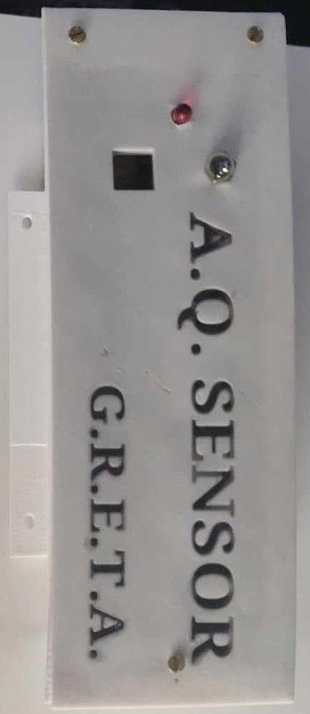
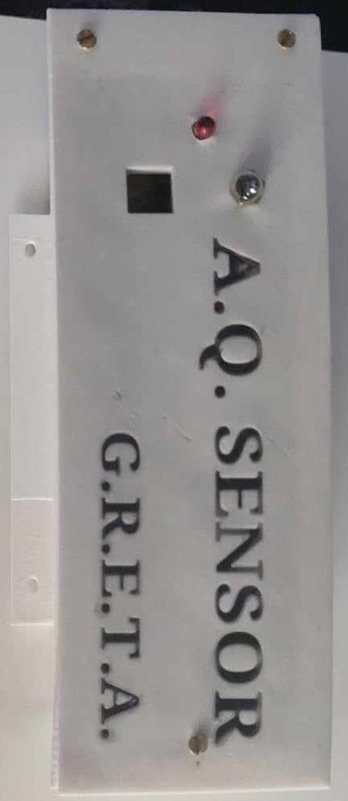

G.R.E.T.A. (Geweldige 'Rona en Temperatuur Alarmsysteem)
Introduction
The G.R.E.T.A. project, standing for "Geweldige 'Rona en Temperatuur Alarmsysteem," was developed during the height of the Covid-19 pandemic. As the world grappled with the unprecedented challenges posed by the virus, ensuring proper ventilation and monitoring air quality became crucial in mitigating the spread of Covid-19 in indoor environments. G.R.E.T.A. was designed to address these needs by providing real-time monitoring of CO2 levels and temperature.
Gallery
 

Objectives
The primary objectives of the G.R.E.T.A. project were:
- Health and Safety: To reduce the risk of airborne transmission of Covid-19 by ensuring proper ventilation in enclosed spaces.
- Data Accessibility: To provide an easy-to-read display of air quality metrics for quick assessment and action.
- Technology Integration: To leverage Arduino technology for creating a reliable and efficient monitoring system.
Technology Stack
The G.R.E.T.A. project utilized the following technologies:
- Arduino Microcontroller: The heart of the project, used for reading sensor data and controlling the display.
- CO2 and Temperature Sensors: Essential components for measuring air quality metrics.
- LCD Display: Used to show real-time data to users.
- Internet Connectivity: In later versions, to enable remote monitoring via online platforms.
Project Development
Phase 1: Concept and Initial Development
During the initial phase, the primary goal was to create a functional prototype that could accurately measure and display CO2 levels and temperature. This involved:
- Sensor Integration: Connecting CO2 and temperature sensors to the Arduino and calibrating them for accurate readings.
- Display Setup: Implementing an LCD display to show the sensor data in real-time.
- Housing Design: Creating a compact and portable housing for the entire system to facilitate easy deployment in various environments.
Phase 2: Testing and Optimization
Once the initial prototype was developed, extensive testing was conducted to ensure accuracy and reliability. This phase included:
- Calibration: Fine-tuning the sensors to ensure precise measurements.
- Stress Testing: Running the system for extended periods to identify and rectify any issues related to power consumption and sensor stability.
- User Feedback: Deploying the system in real-world environments and gathering feedback to make necessary improvements.
Phase 3: Advanced Features and Internet Connectivity
Building on the success of the initial prototype, the project moved towards adding advanced features, including internet connectivity. This phase involved:
- Wi-Fi Module Integration: Adding a Wi-Fi module to the Arduino to enable data transmission to online platforms.
- Web Interface Development: Creating a user-friendly web interface to display the sensor data remotely.
- Data Logging: Implementing a system to log historical data for trend analysis and long-term monitoring.
Challenges and Learnings
The development of G.R.E.T.A. presented several challenges, including:
- Sensor Accuracy: Ensuring the sensors provided reliable and consistent data required meticulous calibration and testing.
- Power Management: Balancing power consumption with performance to ensure the system could run continuously without frequent battery changes or recharges.
- Connectivity Issues: Implementing a stable and secure internet connection to reliably transmit data online.
Through overcoming these challenges, valuable insights were gained into the integration of sensors with microcontrollers, the importance of thorough testing, and the complexities of developing IoT solutions.
Impact and Future Prospects
G.R.E.T.A. played a significant role in ensuring safer indoor environments during the Covid-19 pandemic by providing real-time monitoring of air quality. While the original internet-connected version is no longer available, the project's success highlighted the potential for further developments in air quality monitoring and IoT applications.
Future prospects for G.R.E.T.A. include:
- Enhanced Connectivity: Re-developing the internet-connected version with improved security and stability.
- Expanded Metrics: Incorporating additional sensors to monitor other air quality parameters such as humidity and particulate matter.
- Mobile Integration: Developing a mobile application to provide users with real-time alerts and data access on-the-go.
Conclusion
The G.R.E.T.A. project is a testament to the power of technology in addressing real-world challenges. By leveraging Arduino and sensor technology, G.R.E.T.A. provided a crucial tool for maintaining safe indoor environments during a global health crisis. The lessons learned and the impact achieved underscore the importance of continuous innovation and development in the field of environmental monitoring.